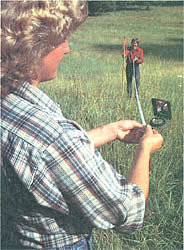
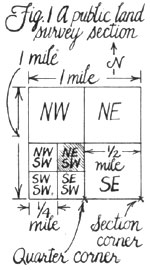
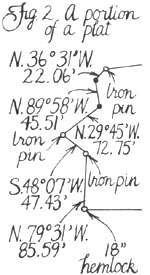
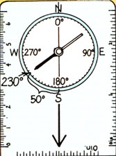
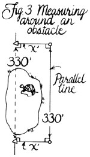
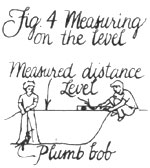
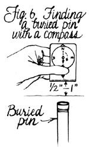
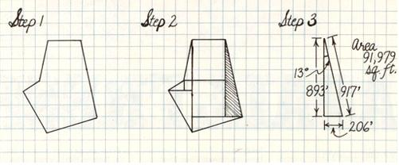

MOTHER'S HANDBOOK
Finding property markers saves your time, expense and trouble.
Because I live in the country and have done some surveying, I am often being asked about property boundaries. The questions are varied: "How much does a surveyor cost?" "Can I do it myself?" "What equipment do I need?" "What do my property corners look like?" "What are the laws concerning surveying and property boundaries?" "Where are my property records?" People ask these questions, not from a desire to fence and post their land, but because of pride of ownership, the desire for knowledge, or - sometimes - to protect themselves from the threat of encroachment.
Take my friend up the road. For years, he had lived peacefully on his 20-acre farm. Then a smooth operator bought the property next door, and subdivision plans began looming on his boundaries. My friend ended up paying a surveyor $1,500 - just to ensure that the new neighbor's ambitions wouldn't include any of his farm.
A thin line separates the smooth operators of this world from those of you who prefer to live and let live - the boundary line of your property. Your right to build or farm, your right to live on land the way you see fit, even your family dog's right to roam at will - all stop at that line. This article will tell you everything you need to know to find it, on the ground . If the thought of doing your own surveying scares you, don't worry. You don't have to be a genius to find your property boundaries - just a detective.
Knowing how to find your own property markers can save you time, expense, and trouble. But be aware that there's a big difference between finding established lines and setting new ones (or adjusting incorrect old ones). Only a licensed surveyor is legally qualified to set or move lines.
You've heard it said that the job isn't over till the paperwork is done? In this job, the paperwork comes first. Don't set foot outside until you have in hand every document that could help. First on the list is the portion of your property deed called the legal description : the description in words of your property lines. And before you can understand how to decode that description, you must learn which of the two common surveying methods applies to your property. One is the metes and bounds method; the other is the public land survey system.
Metes and bounds is the most common surveying method and the one used almost exclusively in the East. Metes and bounds defines property by its boundary lines, each line consisting of direction (or bearing) and distance (or length). Here is an example:
Beginning at a point 247 feet due east of Henly Fork, thence N47W, 210 feet, thence N43E, 204 feet to an Oak, thence S47E, 210 feet to a post, thence S43W, 204 feet to the point of beginning. Containing 0.98 acres, more or less.
Notice that each leg consists of both direction and distance. With a compass and a tape measure, you could walk around the perimeter.
The public land survey system evolved in response to helter-skelter settlement in colonial times. In the 1700s, nobody knew how much land anyone owned, or where it was. In northern Georgia, for instance, entrepreneurs sold over 29 million acres in a three-county area that contained only 9 million!
Thomas Jefferson solved the problem. During his presidency, the federal government sent a small army of surveyors across the Appalachians with instructions to split the frontier into squares, placing boundary markers every mile. Thus, the public land survey system consists of a checkerboard of square-mile lots, called sections . Each one of these sections contains 640 acres and a boundary marker at each corner.
To encourage people to fill up the sections, the government created homestead allotments. The basic allotment was 160 acres - a quarter section. The surveyors marked these boundaries, too, and called them quartercorners.
Now, all this won't help you unless you know how to read a public land description (Fig. 1). It sounds hard until you get the hang of it. Each quarter of a section bears the name of its compass location: NE, NW, SE, SW-e.g., "the SW 1/4 of section 3." Want less than 160 acres? Chop the SW 1/4 into quarters again. Each quarter-quarter is 40 acres. One of them could be named the NE 1/4 of the SW 1/4 (shaded in Fig. 1). And so on down. (On occasion, adjacent quarters will be combined to yield a "half," e.g., "the south 1/2 of section 27.")
Thus, a public land description will not list boundary lines. Jefferson designed the system so that all boundary lines run north-south and east-west - along the quarters as well as the sections. Since section boundaries are exactly one mile long, subunit borders will be exact fractions of a mile.
There are even better information sources than your deed. The best (and sometimes most elusive) document you can lay your hands on is the surveyor's map, or plat (Fig. 2). The plat translates that legal confusion of numbers and terms on the deed into pictures. It may also show references to natural landmarks, or triangulation data which may locate a particular point.
Plat-chasing is a major pastime among surveyors. Your plat, if one exists, may accompany your deed. Or it may languish in city or county records (clerks' or surveyors' offices would be the best places to search) or reside with a previous owner. Plats of neighboring land are helpful, too. They may show the location of a common boundary.
If you live in a subdivision or built-up area, you may be wondering why your deed's legal description reads only "Lot 22, Rock Creek Estates" or "Tract A, First Addition." But these, too, are metes and bounds surveys. The surveyors created several lots at once, so they drew one map of the whole thing. Deed descriptions merely refer to the master plat, which you will find in the public records.
You should also keep an eye peeled for early versions of your property description, surveyor's notes, and descriptions of roads that border your land. Why? First, to ensure that your deed doesn't contain mistakes; second, to find out all you can about boundary markers - the key to property lines.
You are now nearly ready to step into the surveyor's shoes. First, though, you'll have to gather your equipment. You'll need a compass, long measuring tape, plumb bob, level, hatchet, some ribbon, and stakes. You'll also need a willing assistant. Now check your instruments. Do they read in the same numbers as the survey? If not, you will have to translate.
Most people will have on hand the type of compass that uses the directional measurement known as azimuth . Being ornery as a rule, surveyors use another system, called bearings . To learn how to translate one to the other, see the sidebar "Converting Azimuths to Bearings."
On to distances. We measure lengths in feet and inches, don't we? Well, the surveyor uses either feet and tenths of a foot (be very alert for this!) or a venerable system called chains . Don't panic at this. A chain measures 66 feet. Why 66 feet? Because it's convenient for land computations. Ten square chains equal one acre - which means to compute acreage rapidly, all you have to do is find the number of square chains, then move the decimal point once to the left. Also, one mile stretches exactly 80 chains.
A hundredth of a chain - about eight inches - is called a link . Old-timers also used a quarter-chain measure (16-1/2 feet), calling it a rod, pole, or perch.
I find that if I'm faced with a description written in bearings and chains when my equipment reads in azimuths and feet, my brain reels at the prospect of translating and tramping about at the same time. It's far better to translate all the degrees and distances on paper before you set out.
The normal hand compass is marked off in azimuths . An azimuth is a direction - from 0° to 360° - measured clockwise from due north. Thus, north is 0°, east is 90°, south is 180°, and west is 270°.
Bearings start with the same 360° circle, but it is divided into quadrants of 90° each. On either side of due north are the NE and NW quadrants. Likewise on the south: SE and SW. Every direction reads as an angle to the east or west from north or south.
Sound confusing? Let's look at an example:
This angle, roughly southwest, has an azimuth reading of 230°.
180° is due south, so 230° is due south plus 50° to the west. Thus 230° becomes "an angle from due south of 50° to the west" - or, in surveyor's shorthand, S50W.
Got it? Let's try another one. What's the bearing equivalent of azimuth 25°? If you said, "It's N25E" (an angle from due north of 25° to the east), you're ready to get out and start walking your boundary lines!
Now you can begin your scavenger hunt.
Step one: Always start from a known point. It must be something you can absolutely match with the written record. It may be a marker on your boundary, if someone has already made a positive ID of it. More likely, it will be a road crossing, a section corner, or even a neighbor's marker (garnered from that plat you unearthed in the public records). Don't trust ditch lines or fence corners, unless the record mentions them.
Step two: Measure off the course, direction, and distance exactly as the deed says. Flag the line with your ribbons as you go. Make sure that your flags all line up straight and in the right direction. (Your assistant can be a great help here.) Watch out for any iron or steel objects or anything carrying electric current while you walk - they can attract the compass needle and throw your readings off. If you come to a large obstruction, you can measure a line exactly parallel to your boundary line for a short distance until you get by the obstacle (Fig. 3).
Surveys always measure distance on a horizontal plane, not along the ground slope. Unless you have a calculator that's well versed in trigonometry (for equating slope distance to horizontal), you, too, must measure on the level. To do so, whenever you're traversing hilly land, you and your assistant need to hold your tape (or a measured length of string) along your directional line and exactly level (use your level to determine this). Then, let your plumb bob hang vertically down from the tape (or string) end to determine where on the ground that horizontally measured distance falls (Fig. 4). Repeat as needed to accurately measure across rises and dips.
Step three: Once you've traveled the full distance in one direction, search for the boundary marker. This is always my favorite part. Will you know it when you see it? If you're lucky, your plat or deed will mention how the surveyor marked corners. If not, you're in for some Sherlock Holmes-style detective work.
You are looking for some object artificially placed in a certain spot (Fig. 5). What kind of object? If your documents omit mention of the markers, look for a date of survey, a clue to the type of marker used. Nowadays, surveyors use well-anchored pipes or steel rods, capped with brass, aluminum, or plastic, embossed with the surveyor's registration number. But years ago, they used anything handy. That included railroad spikes, wooden stakes, even broken glass (usually from a convenient whiskey bottle).
If you know you're seeking a buried pin, you can use your compass as a metal detector (Fig. 6). Stand so the compass needle is pointing due north, then turn the compass vertical - so the needle points up. Keep facing north and move the compass back and forth over the approximate pin location, holding it about a half-inch to an inch off the ground. If the needle spins downward and points to the ground - dig.
The public land surveyors often spent months or years on the frontier, and couldn't afford to carry around a load of markers. Thus the identity of their monuments varied widely. In the prairie, they filled pits with charcoal. In the mountains, where they spent most of their time hacking brush, they simply left an etched stone buried at the section corner. They would use witness trees in their notes to relocate the marker through triangulation.
Remember, markers don't last forever. Wooden stakes may last less than 10 years. A "10 inch pine" in ancient notes may be a 20-inch pine today - or a rotting stump.
Step four: Proceed to the next point. Don't give up if your search has so far proven fruitless. The next corner may lie in plain sight. And that's a bonus, because the more corners you find, the greater your chances of finding the remaining ones. You'll know what you're looking for and be able to zero in on it from two sides.
One possible monkey wrench that may be throwing you oft: Your deed bearings may not be written in terms of magnetic north (a compass actually points to a "false North Pole"). They may be written in true north (referring to the real North Pole) or even in grid north (referring to an artificial regional standard that uses parallel "north-south" lines). Then too, even magnetic north shifts some over time. So if your bearing readings seem to be causing you trouble, take a compass reading between two known points of your deed or plat, and compare that to the recorded bearing. If there's a significant difference, adjust all your bearing readings as needed to compensate.
Step five: Preserve the markers you find, but DO NOT MOVE THEM. They are considered legal boundaries only as long as they remain exactly where they are. You cannot move them to where you think they ought to be. Only a licensed surveyor can do that. The difference between you and a surveyor (besides $400 a day) is that only that person can establish property lines and testify in court on their whereabouts. If there are serious legal problems with your boundary, you will need a surveyor.
So what have you accomplished? A lot. If you found some corners, you may have staved of a boundary war with your neighbor. Show him or her what you've found, so you'll agree. Then paint a few trees or pile rocks around the spot so it doesn't go to weeds. Don't force your grandkids to go through the same search.
Even if you didn't turn up any corners, your time hasn't been wasted. You've probably dug up some useful old records, and that's half of what you'd pay a real surveyor for.
If your property has a simple rectangular shape, you don't need to read this. But what about those of you with oddshaped lots with five or ten separate sides? Before you throw in the towel, try this method for computing your acreage.
First, make a scale drawing of your property on grid paper (Step 1). It doesn't have to be entirely accurate, but it should be large enough so you can write plenty of figures inside. Write the direction (in bearings) and distance along every boundary line.
Second, draw lines running north-south and/or east-west through every angle point. You need be concerned only with lines in the interior, and once they meet another inside line, you need draw no further.
Your polygon is now divided into rectangles and right triangles (Step 2). To figure out the area of the triangles, all you need is a math book or calculator with sine and cosine functions. Remember them from high school trigonometry? In a right triangle, the sine equals the length of the side opposite an angle divided by the length of the hypotenuse (which, you'll notice, is always a boundary line with a known length). A cosine equals the adjacent side divided by the hypotenuse.
You already know one angle of each triangle - remember, the bearing is the angle from the north-south line you drew. So if you look up the sine or cosine (whichever is appropriate) of that angle, you can use that and the length of the boundary line to solve for the remaining sides of the triangle.
For example, take the shaded triangle from Step 2 - one that has a hypotenuse of 917 feet running S13E (Step 3). The sine of 13° is .225.
Since .225 = opposite side/ 917, then the opposite side = 206. Now you can use the cosine of 13°, .974, to solve for the angle's adjacent side: .974 = adjacent side/917 ... or 893 feet. The area for a triangle is 1/2 base times height, in this case 1/2 X 206 X 893 = 91,979 square feet.
As you work, write every calculated distance on the appropriate grid line, and record the area of each subfigure inside that shape. When you add all those areas up at the end, you'll have your square footage. Divide that by 43,560 and you'll know your acreage.
|
 |
 |
 |
|
 |
 |
 |
|
|
 |
 |